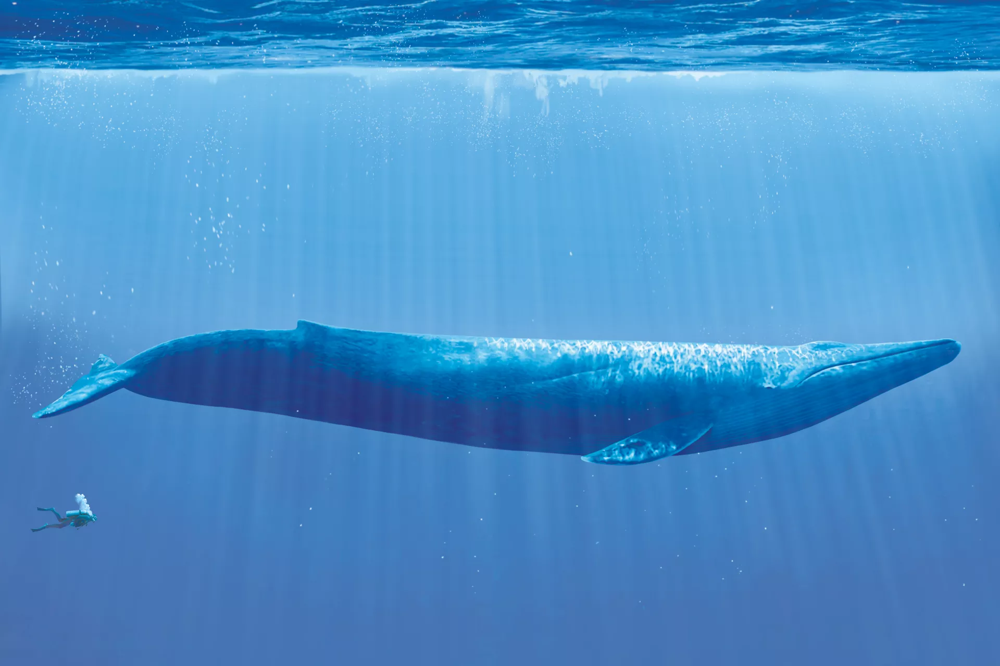
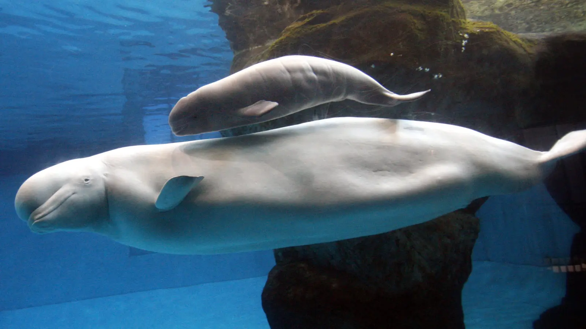

| Name |
Scientific name |
Image |
Size (Max recorded) |
Weight (Max recorded) |
IUCN clssification |
Global distribution |
| Blue whale |
Balaenoptera musculus |
 |
30 meters |
199 tons |
Endangered (IUCN 3.1) |
All the earth's oceans |
| Killer whale |
Orcinus orca |
 |
8 meters |
4 tons |
Data Deficient (IUCN 3.1) |
All oceans and seas |
| Humpback whale |
Megaptera novaeangliae |
 |
17 meters |
40 tons |
Least Concern (IUCN 3.1) |
Feed in polar waters & breed in tropical and subtropical waters |
| Sperm whale |
Physeter macrocephalus |
 |
20.7 meters |
80 tons |
Vulnerable (IUCN 3.1) |
Cosmopolitan, ice-free waters over 1,000 metres deep |
| Sei whale |
Balaenoptera borealis |
 |
19.5 meters |
28 tons |
Endangered (IUCN 3.1) |
Most oceans and adjoining seas, and prefers deep offshore waters |
| Grey whale |
Eschrichtius robustus |
 |
15 meters |
41 tons |
Least Concern (IUCN 3.1) |
Eastern North Pacific and western North Pacific |
| Right whale |
Eubalaena australis |
 |
18 meters |
89 tons |
Endangered (IUCN 3.1) |
North Atlantic in the western Atlantic Ocean, North Pacific in a band from Japan to Alaska and all of the Southern Ocean |
| Minke whale |
Balaenoptera acutorostrata |
 |
8 meters |
10 tons |
Least Concern (IUCN 3.1) |
Global oceans & Antartic |
| Fin whale |
Balaenoptera physalus |
 |
27.3 meters |
74 tons |
Vulnerable (IUCN 3.1) |
Cosmopolitan, polar to tropical waters |
| Beluga |
Delphinapterus leucas |
 |
5.5 meters |
1.9 tons |
Least Concern (IUCN 3.1) |
Discontinuous circumpolar distribution in Arctic and sub-Arctic waters |
| Narwhal |
Monodon monoceros |
 |
5.5 meters |
1.9 tons |
Least Concern (IUCN 3.1) |
Canadian Arctic and Greenlandic and Russian waters |